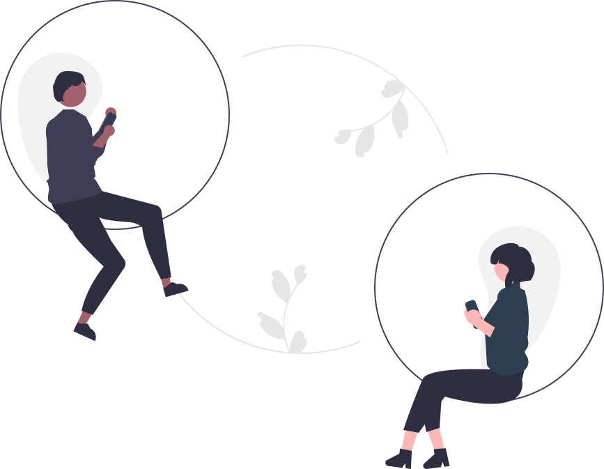
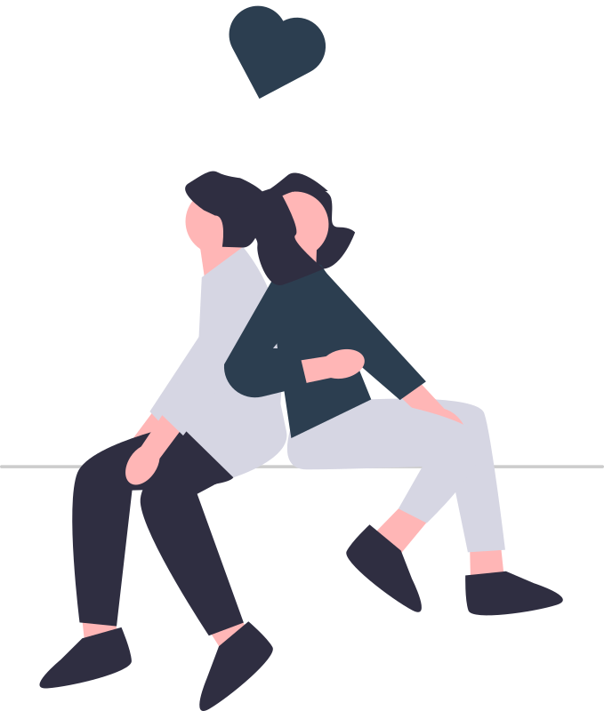
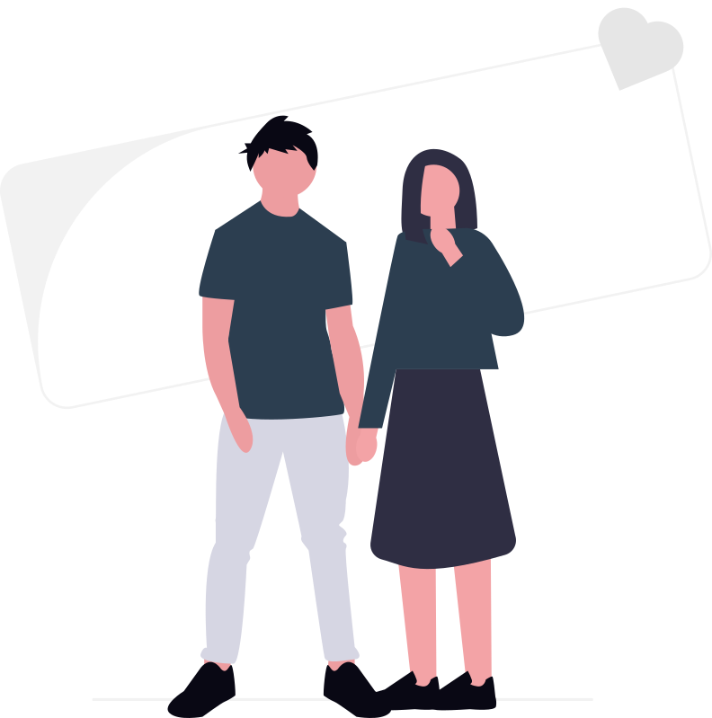

זוגיות ומערכות יחסים
טיפול רגשי לזוגות ויחידים המסייע להבין דפוסי קשר
כיצד נוצרים דפוסי הקשר
דפוסי הקשר שלנו מתעצבים כבר בשנות חיינו הראשונות, דרך המפגשים עם דמויות ההתקשרות הראשוניות שלנו. מסרים – מפורשים ולא מפורשים – על אהבה, ביטחון, גבולות ונוכחות רגשית, הופכים עם הזמן למפה הפנימית שאנחנו מביאים לכל קשר חדש. בטיפול, אנחנו לומדים לזהות את אותן מפות, מבינים כיצד ציפיות מהעבר חודרות להווה, ומגלים שינוי אפשרי – לא כשינוי של האחר, אלא כצמיחה עמוקה ואמיתית שלנו עצמנו, מבפנים.

תקשורת כבסיס לקשר בריא
תקשורת טובה אינה רק הימנעות מריבות – היא היכולת להיות נוכחים, להקשיב ולהיות מוקשבים, גם ברגעים הקשים ביותר. רבים מאיתנו גדלנו בלי מודלים לתקשורת פתוחה ובריאה, ולכן מצאנו את עצמנו בתבניות חוזרות: שתיקה, ריחוק, ניסיון שוב ושוב להסביר מבלי להיות מובנים. בטיפול, נלמד לזהות את הצרכים שמסתתרים מאחורי המריבות, לפתח שפה רגשית משותפת ולהחזיר את תחושת הקרבה שנשחקה.

משברי זוגיות: כשהקשר
לעיתים הקשר נתקל במשבר – בגידה, פרידה קרובה, אבדן אמון, או שחיקה ארוכה שנצברה בשקט. בנקודות האלה, קל להרגיש שאין דרך חזרה. אך בניגוד לתחושה הזו, משבר בזוגיות הוא לעיתים קרובות גם הזמן שבו שינוי אמיתי הופך אפשרי – בתנאי שיש מרחב בטוח לעבד אותו. הטיפול מציע בדיוק את זה: מקום ניטרלי, לא שיפוטי, שבו שני הצדדים יכולים להיות נוכחים ונשמעים.

הטיפול – מרחב בטוח לשינוי
בטיפול רגשי למערכות יחסים, המטרה אינה לקבוע מי צודק. המטרה היא לייצר מרחב שבו כל אחד יכול לחוות הבנה, ולגלות מה הוא מביא לקשר – מה הצרכים שלו, מה הפחדים ומה מונע ממנו לאהוב ולהיאהב באופן מלא. בין אם אתם מגיעים כזוג ובין אם כיחיד העובד על דפוסי הקשר שלו, התהליך הטיפולי יכול להיות גשר בין מה שיש לבין מה שאתם רוצים שיהיה.
הקשר שלכם מגיע לטיפול ולתשומת לב
צרו קשר לשיחת היכרות קצרה ללא התחייבות, ונבדוק יחד כיצד אוכל לסייע.
לקביעת פגישהנדבר
השאירו פרטים ואחזור אליכם בהקדם לתיאום פגישת היכרות
תודה! הפנייה התקבלה.
אחזור אליך בהקדם לתיאום פגישת היכרות.